Ok, so you really don't want to spend a lot of time to see what's in here for you. Give yourself 30 minutes. Be aware, that that's a short time, only enough to get a very rough feeling on what this is all about. We'll try anyway, to get you hooked...
There are multiple Smalltalk systems around, but the differences are much smaller than usually thought; they all follow the same principles, but differ on details in the implementation (speed), the GUI (experimental vs. conservative) and intended target users (experimental vs. business). If you know one Smalltalk, you should not have problems to move on and feel comfortable in any other (Its like switching from Java-Swing to Java-SWT, or from one Visual-C to eclipse).
Smalltalk is a much more dynamic environment than anything you've ever seen before (with the exception of some Lisp systems, maybe):
First, you can give it a command line expression to evaluate with the "-E" (eval) or "-P" (print) options. For example, to print "Hello World", try:
or:stx -E "'Hello World' printCR"
or:stx -P "22 factorial"
(notice the double quotes to ensure that the expression is passed as a single argument to the stx program.)stx -P "22 factorial nextPrime"
You can also put a script into a file and call it as:
. On Linux/Unix systems, make it executable and run it just like any other script:stx -F "<filename>"
Finally, ST/X can be started in an interactive line-by-line interpreter mode with:bash$ cat script #!stx --script 1 to:23 do:[:i | 'the factorial of %d is %d\n' printf:{ i . i factorial } on: Stdout ]. bash$ chmod +x script bash$ ./script the factorial of 1 is 1 the factorial of 2 is 2 the factorial of 3 is 6 the factorial of 4 is 24 ... the factorial of 22 is 1124000727777607680000 the factorial of 23 is 25852016738884976640000 bash$
stx --repl
These options may be useful for little scripts or computations. However, the real power lies in the integrated development envronment. It is not very useful, to write longer programs in a dumb (non-Smalltalk-aware) editor. Therefore, for the following examples, start the full ST/X IDE with the command line:
stx(or"stx -I"for a clean start)
In the Launcher, click on the "Open SystemBrowser" button:
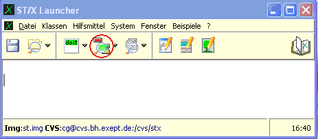
to open the most useful tool, the SystemBrowser. This is the programmer's main interface to write, change and to execute programs.
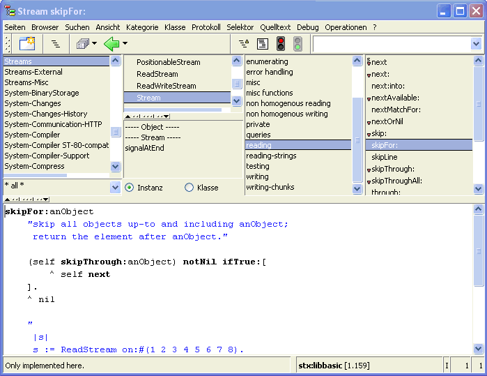
First notice, that the system browser is not file oriented. You are presented the class- and method objects as they are present in the current system, not with files.
Smalltalk does not normally need and use files for its operation (but of course allows for source files to be used for code exchange and also interacts with source code repositories such as CVS or Mercurial for version management). The browser shows the code base as it is present in your memory, not in some file. When you change code in it, it is directly and immediately affecting the existing code and possibly even code which is currently being executed. This means, that you are living inside the system, and your programming becomes part of the running program.
Second, notice that classes can be shown in various different organisations: by name, inheritance, package, namespace and by category. The default and the one also shown in the above picture is "by category". This organization presents classes by their function, even if you don't know the inheritance or the exact name. Of course, there are also functions to search for a class by various criteria - especially, by a matching name pattern, or if it calls for an operation in its code, if it references another part of the system or if it contains a particular string or code sequence.
The top panes are named "class-category-list", "class-list", "method-category" or "protocol"-list and "method-list" from left to right. They are used to select the class and method (= function). There is also a variable list, which we ignore for now. When anything is selected in the upper area, the corresponding code is shown in the code-view area at the bottom.
Some people like to work with a hierarchical or package organisation. Try the browser's "View"-menu to see those.
In this tutorial, we want to create a new little application.
Applications are usually written as subclasses of the
ApplicationModel class,
which provides common functionality for window handling,
resource management, startup and release etc.
So we will need a new so-called "Application-class" to start with.
To create it, press the right button in the class-list-pane (the second pane in the upper area)
and select the "New-Application" item from the "New" submenu.

The following initial class definition template will be shown in the code-view:
ApplicationModel subclass: #NewApplication1
instanceVariableNames: ''
classVariableNames: ''
poolDictionaries: ''
category: 'Applications'
To do this, select the text which is to be changed with the mouse pointer, and type in the new name. When you are finished, select the "Accept" menu item from the code view's right-button-menu (or press the green bar at the left, which performs the same action). Pressing "Accept" ("accepting", for short) tells the browser, that you are done with editing of whatever is shown in the code view, and you want to make this change permanent. In other words: "to let it create the new class as specified".
In other languages, or IDEs you'd say "compile" a class (although nothing has yet been compiled, actually). All we did so far was to create a new class object, and if you look at the accepted code, you will notice that this is actually an instance creation message being sent to the parent class. An operation which can also be performed by the program at execution time!.
You will be asked if you want the browser to generate some standard application framework
code for you. Confirm by clicking "Yes" (or "OK"). This is a convenient service provided by the
browser: whenever you create a new application class, it can generate a typical
framework of UI and menu components.
If you clicked on "Cancel" by accident,
find the corresponding "Create Initial Code" item in the class list's popup menu and select it.
Now, your new class should be presented as:
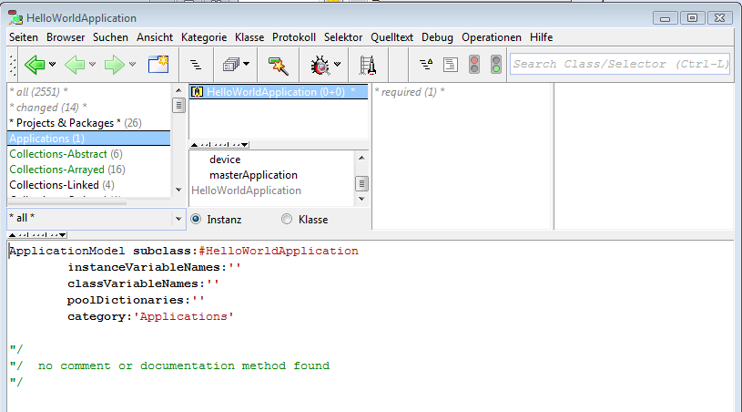
Notice the little "launch rocket" icon in the toolbar. This appears whenever a launchable application class is being shown. Click on it, to see the first appearance of our "hello world" application.
Click on the radio button named "Class" below the browser's class list. You'll see "menu specs" in the method category list. Select it, then double click on the now appearing "mainMenu" method entry in the rightmost method list. A Menu Editor will appear:
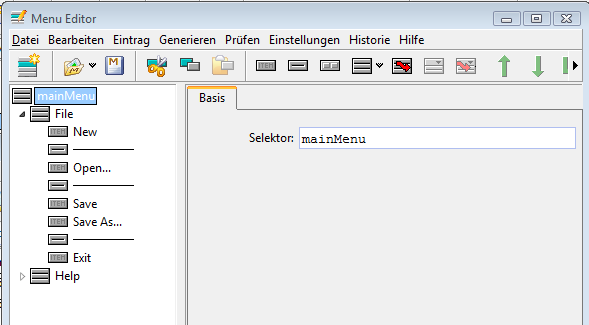
In the left tree list, select and remove all entries except for the "Exit" item (select, then either press the Delete-key, or use the right-button menu). Finally, save the changed menu specification via the menu editor's "Save as Method" toolbar button, and close the menu editor.
Restart the hello world app via the "rocket-launch" button in the browser to see the changed menu (in this case, we have to restart the application, because by default, the menu is constructed once at startup of an application. (We could have defined it to be constructed dynamically whenever clicked, but that is described elsewhere.)
Let us enhance the application by adding a button to close the application window. Drag a "close"-button from the gallery into the canvas:
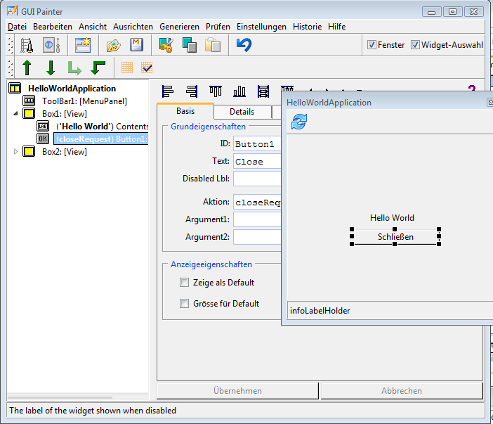
Save the window specification ("Save as Method" button in the toolbar) and exit the UI-painter tool. Then retry the HelloWorld application, and close it via the new button.
Notice that the UI-painter tool also shows a launch rocket button - so you can also try the changed user interface right from within the UI painter, without having to go back to the browser. You can keep the UI painter open or iconified if you think that more changes are to be made soon.
Now we are going to add some real code to the application. First, reopen the UI painter tool on the window specification. Find and select the close button we have just added in the canvas view. Notice that the widget tree expands the containers to make the selected widget visible. Also find the two fields named "Text" and "Action" in the attribute area of the selected widget. Change the text to something like "Press Me", and the action to the name of a method which we are going to code in a minute, "pressMePressed". Now, we have just told the button to call the "pressMePressed" function of our application (which of course does not exist yet).
Click on the accept button at the bottom and then save the window spec again. But do not close the tool. Instead, launch the application right here via the tool's own rocket launcher toolbar button.
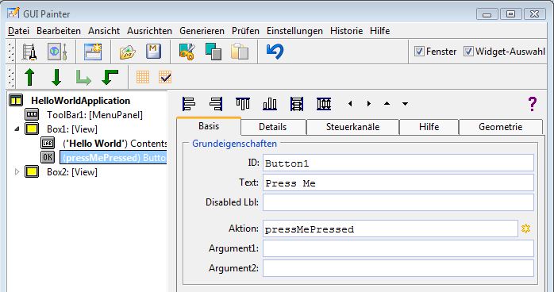
In your HelloWorld app, press this new button now. A debugger appears, telling you, that "pressMePressed" was called, but your application does not understand it. This basically means, that an unimplemented function was called. Of course, this was to be expected, because we have not yet defined how the helloWorld app should react when the "Press Me" button is clicked. We have not defined what the "pressMePressed" response should be!
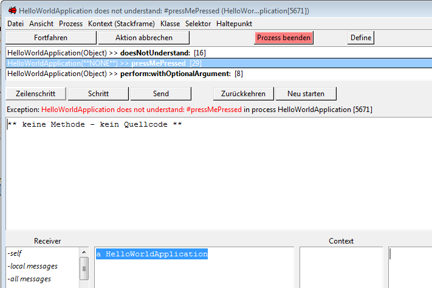
Close the debugger, and return back to the browser. Notice, that your application is still open, and you can press the non-functioning button again, if you like. Being able to play with such an unfinished application is great during development. You don't need any of the specified callback methods until they are actually called. This makes it easy to proceed in very small steps, implementing and debugging code as it is written. You may have noticed, that it is even possible to add or modify code in the debugger itself, and then retry the just edited code. This is the way most experienced Smalltalk programmers work, actually.
Back in the browser, switch to the instance side.
Then first create a new method category named "actions"
(in the method category/protocol view, which is the third list view), select this protocol,
and then enter the code:
pressMePressed
Dialog information:'wow, it worked'.
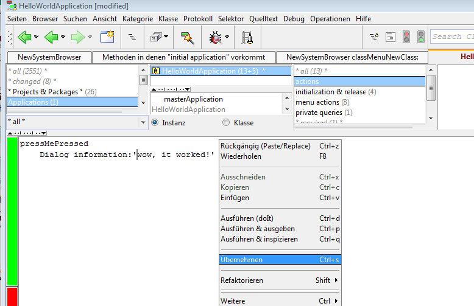
This teaches the HelloWorldApplication a new trick: how to respond to "pressMePressed". Here, we tell it to send an "information:" message to Dialog, passing the string "wow, it worked!" as argument. Dialog happens to be a global variable, which is actually bound to a class (yes, you remember? Classes are objects too, and can be sent messages just like regular objects). If you are curious (and you should be), you can use a SystemBrowser to find out, how Dialog responds to that and see how it is implemented. And also see that there are many more helpful messages understood by Dialog. If you feel attracted, you may now take a look at the syntax of the Smalltalk programming language. An introductionary text is found in the "Smalltalk Basics" chapter of the tutorial.
By the way: you can try code like this without a need to write an application or a test framework. In the browser's code view, simple select the whole line of code ("Dialog information:'....'") with the mouse and evaluate it via the right button menu function "doIt". An evaluator similar to Java's groovy is already built into the Smalltalk IDE (and has bee there for the past 30years!)
Of course, the whole state is not what you need, when you want to give your new application's source code to a friend (the process of deploying a binary executable will be described later).
For this, a more fine-grain transport mechanism is useful:
the fileOut mechanism allows you to save individual classes or packages to a
source file. Try "Fileout As" in the class-list menu.
The resulting source file can be loaded into another Smalltalk either manually
via the FileBrowser application, or by evaluating
Smalltalk fileIn:'pathName'
It is also possible to save all of your session changes into a so-called change list. This function is found in the launcher's "File" menu. Session changes can also be loaded as described above.
Packages offer two big advantages:
a) they can be loaded as a whole, and thus
be much easier transported, and
b) they can be compiled into a binary class
library (which can later also be transported and loaded much faster as a single entity).
To package the application, first switch the browser to the "package"-viewing mode (in the "View" menu):
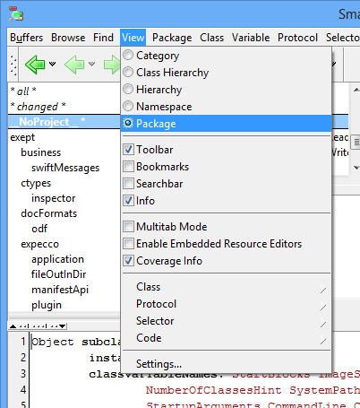
A hierarchical package list appears, replacing the previous "category" pane. You will notice, that your hello application is found packaged under "__NoProject__". Obviously, we did not assign it to any real project, yet. Select the "New" item and enter a reasonable package name into the dialog that pops up:
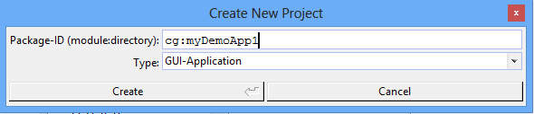
The name must conform to a certain pattern, which is described later. Skipping the details here, use "xxx:myDemoApp1" or "xxx:demos/myDemoApp1", where "xxx" is something unique for you, such as your company name or initials. It is recommended that you use at least a 2-level hierarchy. This makes your life easier later, when you add more and more projects.
The package name is similar to package names in other programming languages like Java. It should be a unique string, consisting of a so-called module (the xxx) and a path (the rest after the colon). The reason for the module to be special is due to its special role when it comes to source code management and versioning. We'll describe that later.
If this is an initial package creation, and no classes have yet been created for it, the browser opens another dialog, asking if you like some initial application class to be created for you. If you confirm with "Yes", it will basically create an empty helloWorld like application for you. If you followed the above steps (i.e. you already have your application class defined), click on the "No" button.
After you have created the new package, move your application class (via drag&drop) into this package (or, if you prefer menus, use the class-list's "Move to Package..." menu function).
When done, your browser should show something like:
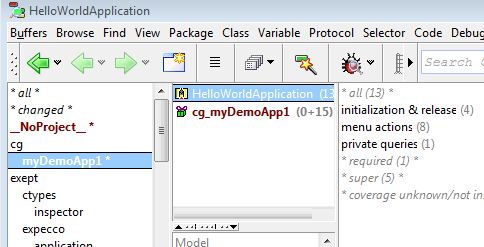
Notice, that the "create package" operation also created a new class, which is a so-called "package definition". This class ("cg_myDemoApp1" in the above example) contains all the meta information required for later building and loading of the packaged classes, such as which classes are contained, how to compile and how to deploy it. We'll come to this in a minute...
Now, having things packaged, you may file-out the whole package, to transport the application to a friend. For this, select the browser's "FileOut As..." menu function from the package list on the source machine. This creates a single source file which can be copied to the target machine.
On the target machine, open a FileBrowser, select the file,
and load it with the fileIn menu operation.
Alternatively, evaluate '<fileName>' asFilename fileIn
You can also use the so called Monticello file format for transportation. This is a package format supported by many Smalltalk dialects. It is dialect independent, meaning that it works when transporting code to other Smalltalk systems like VisualWorks or Squeak.
However, be aware that there still might be other obstacles, such as dialect specific language syntax (Namespace support, EOL comments etc.). and class hierarchy issues (superclass hierarchy being different) to be considered. For example, the ApplicationModel hierarchy is very similar in the VisualWorks Smalltalk dialect, whereas it is completely missing in Squeak/Pharo. As a rule of thumb, only non-UI packages are typically portable to other Smalltalk dialects, as each provides different UI framework libraries.
To create a Monticello package, open the Monitcello repository browser from the Launcher-menu, define a directory as package resource directory (or use the default package-cache), and select the "Monticello - Commit or Create mcz File" menu function from the browser's package list. Notice that Monticello support is autoloaded - the browser does not show that menu item before the monticello repository browser has been opened from the launcher.
Actually, many Smalltalk programmers (including the author) have their own universe, in which they find almost every piece of code they ever wrote. That is often a good source of bits and pieces for new projects. Already written parts can be resused or at least taken as a base to start with.
However, if you want to deploy an application to any other (especially "non-Smalltalker") user, you want to have a standalone application, which does not include all of the other stuff, and which also hides the graphical IDE and other development tools.
So you will sooner or later want to create something which can be given to an arbitrary user and which should be easily installable on her machine. This is called "deloying an application".
To create a self-installing package for deployment, open the "Application Packager" from the Launcher's "Tools" menu and follow its guiding. This assistent leads you through the build process interactively. A short introduction to the packager is found in the "Hello World in 5 Minutes" introduction.
As an alternative, you can check in the package and supporting build files (makefiles and scripts) into a source repository (CVS or Mercurial) from the browser's SCM menu, go to the shell command level, check out the package there, and built the stand alone executable via make. This is also the way to go, if you want automatic builds using Jenkins or a similar automatic build tool.
The following gives an example of a command line utility, which can be used just like any other Unix or MSWindows utility via the shell/cmd command line. It will read its stdin and write to stdout, so it can be used in a pipe just like any other Unix command.
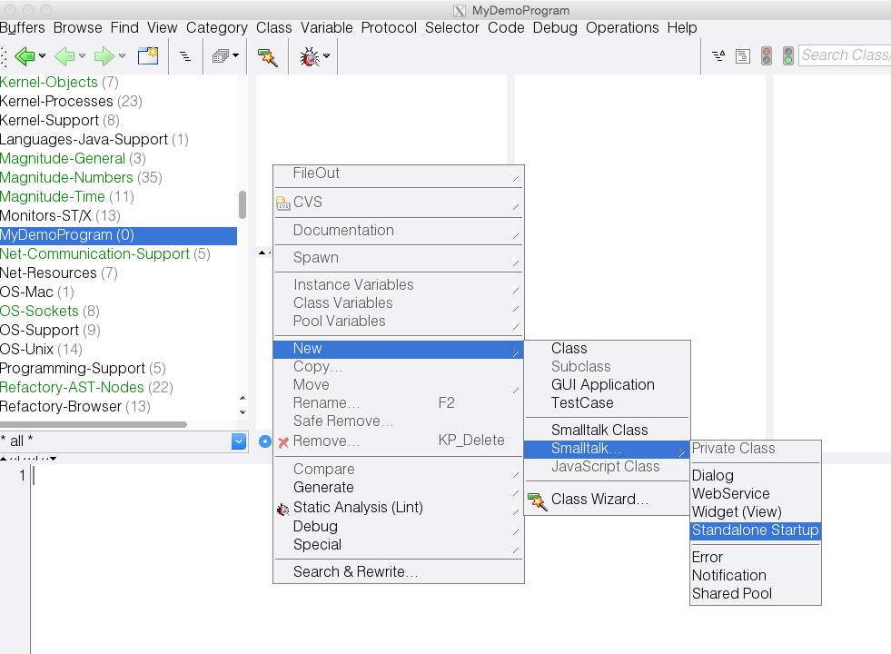
change the class name to "DemoConsoleApp1", "accept" (either in the menu or via CTRL-s or by clicking on the green save-bar), and answer "Yes", when asked if the initial template code should be generated.
This creates a so called "startup class". Startup classes are the entry for stand-alone programs - i.e. programs which are not loaded into the Smalltalk/X IDE, but run as self-standing executables (console commands to be started on the command line or server programs, which are started by init on Unix machines or as services/autoexec programs on Windows).
main:"-method on the class side.
This will be the very first entry to your standalone program, and corresponds to the main()-function of other programming languages. It gets the command line as argument vector (a sequenceable collection of strings, accessable by numeric index).
You will notice, that it does not do much,
but simply instantiates itself and calls the "main:" method on the instance side.
There, the arguments are extracted (you may remove the sample code there),
and a finally, a "realMain:" method is called.
If course, you can remove all this and put your own code right into "main:" on the class side;
however, we found it convenient to have separate methods, allow for easier subclassing.
The "realMain:" method is where the actual action is, and it looks like:
realMain:argsToEcho
Stdout nextPutLine:'Hello World'.
Stdout nextPutLine:(argsToEcho asStringWith:Character space)
Leave everything untouched for now. Our next task is to package this into a deployable package, which we can deliver as binary to other users.
First, we need to package them up. In the browser, change the view-mode to "package",
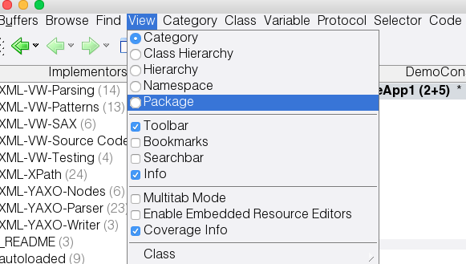
and select the "New..." menu item from the package list menu:
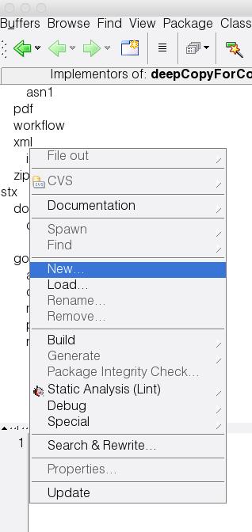
in the dialog, choose "NonGUI-Application" in the type-field, and enter a reasonable name for your package (the same notation as described above). You should now see a class with the funny name in the class list. Here, it is "stx_doc_coding_demoConsoleApp", because we used "stx:doc/coding/demoConsoleApp" as package name.
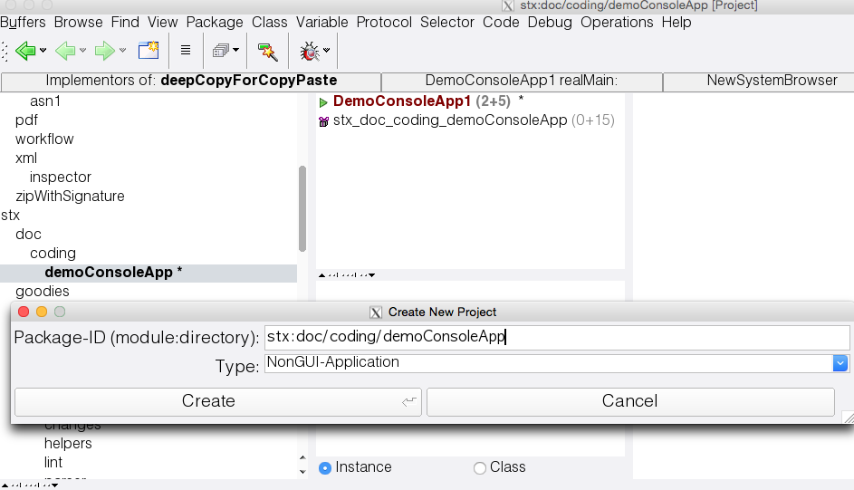
Move your own class (the one with the main-method in it) into this package (drag&drop or via the class's "Move to Package" menu function).
Your browser should now show the two classes in the class list, as in the picture above.
Most interseting are: "productName" and "startupClassName". The first gives the name of your application as shown in the installer, and it will also be the name of the deployable package. Change the returned string to something useful, like "HelloWorld Application".
The second is the startup definition in the executable. Change the value returned by "startupClassName" to the name of your startup class; here to return the string 'DemoConsoleApp1'.
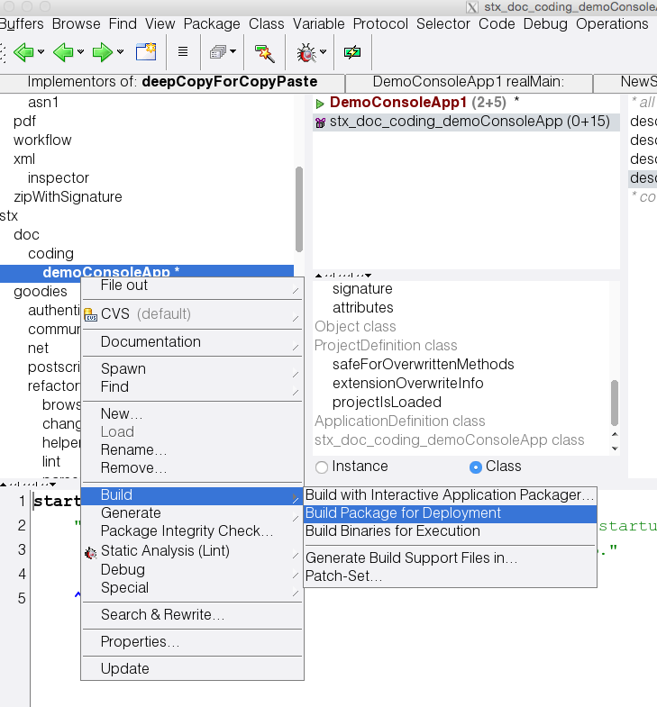
Take a look at the Transcript. A bunch of messages should appear, showing what is going on.
The output should look like:
*******************
building in /private/var/folders/yq/hzq_k0t96x76ylpk8ksxqzrr0000gn/T/stx_tmp/stx_build...
...
build successful.

The above screenshot was taken on a Mac (on Windows, you would find a file named "setup_demoConsoleApp.exe", and on Linux, you'd find "demoConsoleApp.pkg").
Two files are of interest here:
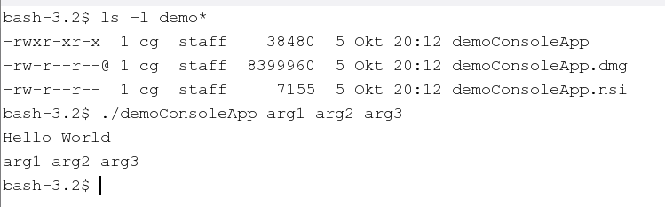
To get shrink wrapped installers, separate installation of the underlying runtime system and the application alone is needed, which is currently not supported by the automatic package process. Actually, from a maintenance point of view, it makes for more stability if each application is self contained and contains all-it-needs in its version; as Smalltalk tends to be less used for small headless programs than for complex server- or GUI apps, size issues are less of a problem in practice.
If you absolutely need (or want) to have a smaller footprint, make sure that the ST/X shared libraries are installed in some standard place (i.e. /usr/local/lib) and the remaining support files are found in "/opt/smalltalk". Then ensure that the LD_LIBRARY_PATH is set correctly so the libs are found.
Once these settings are correct, all you need is the compiled executable, which is typically quite small (40Kb in the above hello world example).

Copyright © 1996-2016 Claus Gittinger Development & Consulting
Copyright © 1996-2016 eXept Software AG
<cg@exept.de>